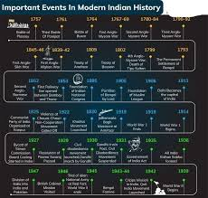
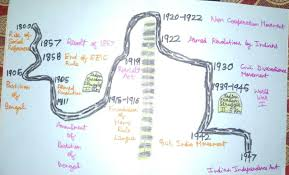

History is the systematic study of the past. As an academic discipline, it analyzes and interprets evidence to construct narratives about what happened and explain why it happened, focusing primarily on the human past. Some theorists categorize history as a social science, while others see it as part of the humanities or consider it a hybrid discipline. Similar debates surround the purpose of history—for example, whether its main aim is theoretical, to uncover the truth, or practical, to learn lessons from the past. In a more general sense, the term history refers not to an academic field but to the past itself, times in the past, or to individual texts about the past.
Historical research relies on primary and secondary sources to reconstruct past events and validate interpretations. Source criticism is used to evaluate these sources, assessing their authenticity, content, and reliability. Historians integrate the perspectives of several individual sources to develop a coherent narrative. Different schools of thought, such as positivism, the Annales school, Marxism, and postmodernism, have distinct methodological approaches.
History is a broad discipline encompassing many branches. Some focus on specific time periods, such as ancient history, while others concentrate on particular geographic regions, such as the history of Africa. Thematic categorizations include political history, social history, and economic history. Branches associated with specific research methods and sources include quantitative history, comparative history, and oral history.
History emerged as a field of inquiry in antiquity to replace myth-infused narratives, with influential early traditions originating in Greece, China, and later in the Islamic world. Historical writing evolved throughout the ages and became increasingly professional, particularly during the 19th century, when a rigorous methodology and various academic institutions were established. History is related to many fields, including historiography, philosophy, education, and politics.
The modern historical period (roughly from the 18th century to the present) has been defined by revolutions, wars, decolonization, and ideological struggles that reshaped nations and societies. From the fight for independence to movements for civil rights and economic justice, this era reflects humanity’s ongoing quest for freedom, equality, and self-determination.
Road Map For History and Struggle


Modern history is a story of resistance—against empires, oppressive regimes, and systemic injustice. While progress has been made, new struggles emerge, proving that the fight for justice, equality, and human dignity is never truly over.